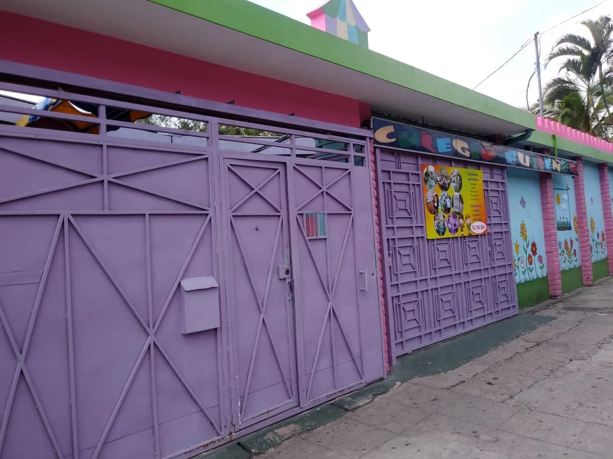
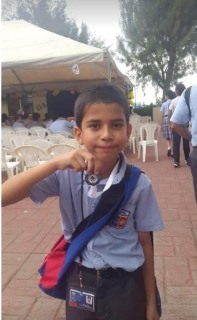
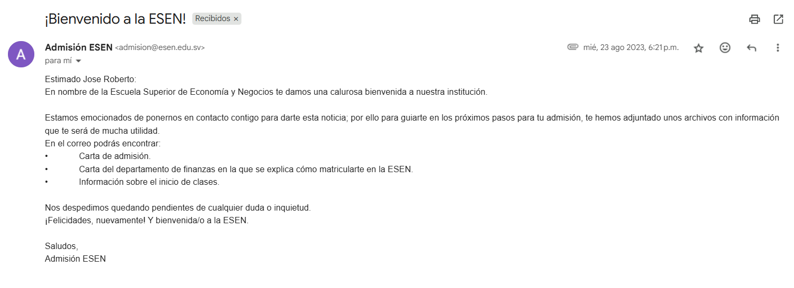

Vida estudiantil
Mi vida estudiantil tuvo inicio en el Colegio Ruiseñor, etapa en la que cursé mis primeros años escolares, como lo es el kinder.
Luego de un tiempo en ese lugar, mis papás pensaban que necesitaba un cambio e hice la preparación para entrar en colegios como el
Liceo Salvadoreño, el Externado de San José y Colegio García Flamenco. Finalmente, ingresé en esté último, debido a que mi papá también había estudiado ahí.

Al entrar en el colegio, tuve que hacer un curso de preparación a finales de 2010. Finalmente, a partir de 2011 ya era un estudiante de parvularia.
Pasaron los años y seguí estudiando en ese lugar, lamentablemente llegó la pandemia a inicios de 2020, cuando yo me encontraba en noveno grado y las clases
terminaron siendo en línea.
El tiempo paso y llegó mi último año escolar en el segundo año de bachillerato en 2022. Sin embargo, se seguíamos sin regresar al colegio y
nos tuvimos que graduar en línea, aunque había ocasiones en la que teníamos que ir al colegio. Lo peor de todo, es que aún encontraba dudas sobre la
carrera y universidad que iba a elegir.

Con las dudas presentes, había elegido la carrera de Administración de Empresas en la UCA e hice el examen de admisión, aunque también había aplicado
a la Esen para la carrera de Economía y Negocios. Sin embargo, no me sentía preparado para la presión y no llegué al examen de admisión.
Así en 2023 entré a la UCA, pero no en el tiempo que estuve no me gustó lo que había elegido. Luego a mediados de año, mi mamá me menciona que
la Esen iba a lanzar la carrera de Ingeniería de Software y Negocios Digitales, a lo cuál accedí, y esta vez me preparé para el examen. Además, luego de
haberlo pasado, me salí de la UCA justo después de haber comenzado mi segundo ciclo.
Finalmente en 2024 entré a la Esen y actualmente en 2025 estoy a punto de terminar mi segundo año de carrera.
